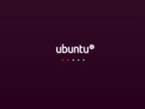
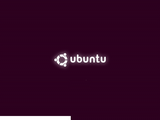
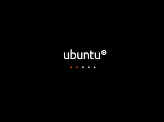

Plymouth
Dieser Artikel wurde für die folgenden Ubuntu-Versionen getestet:
Ubuntu 14.04 Trusty Tahr
Zum Verständnis dieses Artikels sind folgende Seiten hilfreich:
Für die Darstellung des grafischen "Boot Splash", d.h. die grafische Animation während des Startvorgangs, wird Plymouth  verwendet. Dieses wurde von Red Hat entwickelt, um einen "flackerfreien" Bootvorgang zu ermöglichen, bei dem nicht zwischen verschiedenen Grafikmodi umgeschaltet wird. Plymouth ersetzt das früher verwendete usplash.
verwendet. Dieses wurde von Red Hat entwickelt, um einen "flackerfreien" Bootvorgang zu ermöglichen, bei dem nicht zwischen verschiedenen Grafikmodi umgeschaltet wird. Plymouth ersetzt das früher verwendete usplash.
Ähnlich wie bei usplash befinden sich für die einzelnen Ubuntu-Derivate wie Kubuntu, Xubuntu, usw. spezielle Standarddesigns in den Paketquellen [1]:
plymouth-theme-ubuntu-logo

plymouth-theme-kubuntu-logo

plymouth-theme-ubuntu-gnome-logo

xubuntu-plymouth-theme

plymouth-theme-ubuntustudio-logo
plymouth-theme-ubuntu-text
Weiterhin finden sich auch noch verschiedene, nicht Ubuntu-spezifische Designs:
plymouth-theme-sabily
plymouth-theme-solar
plymouth-theme-glow
plymouth-theme-spinfinity
Eine vollständige Liste lässt sich z.B. über die Paketverwaltung Synaptic mit dem Stichwort "plymouth" finden.
|  |
| plymouth-theme-ubuntu-logo |
| plymouth-theme-sabily |
| plymouth-theme-solar |
| plymouth-theme-glow |
|  |
| plymouth-theme-spinfinity |
Hinweis:
Bei manchen Designs fehlt die Rückmeldung bei einem Dateisystemcheck. In Plymouth wird dann keine Fortschrittsanzeige angezeigt und der Bootvorgang scheint ohne Angabe von Gründen endlos zu dauern.
Design ändern¶
Um das aktuelle Design zu ändern, muss zunächst eines der o.g. Pakete installiert [1] werden. Anschließend ruft man folgenden Befehl in einem Terminal-Fenster [2] auf:
sudo update-alternatives --config default.plymouth
Aus der nun erscheinenden Tabelle sucht man sich das gewünschte Design aus, gibt die entsprechende Nummer (aus der ersten Spalte) ein und bestätigt die Eingabe mit ⏎ . Anschließend müssen die Einstellungen noch ins Bootimage geschrieben werden. Dies geschieht mit dem Befehl:
sudo update-initramfs -u -k all
Aufruf¶
Die allgemeine Syntax lautet:
sudo plymouth [OPTION...] [BEFEHL [OPTION...]...]
Eine Übersicht erhält man mit:
sudo plymouth
Aktuelles Design anzeigen lassen¶
Besonders bei der Entwicklung von neuen Designs kann es sinnvoll sein, den aktuellen Boot-Bildschirm ("splash") zu betrachten. Dazu muss das Paket:
plymouth-x11
 mit apturl
mit apturl
Paketliste zum Kopieren:
sudo apt-get install plymouth-x11
sudo aptitude install plymouth-x11
installiert sein - erst dann kann der "Plymouth-Daemon" korrekt im Terminal [2] mit:
sudo plymouthd
gestartet werden. Anschließend kann das Bild mit
sudo plymouth --show-splash
angezeigt werden.
Mit dem Befehl
sudo plymouth quit
kann das Fenster bzw. die Fenster (je nach eingestellter Pixelzahl) mit dem Vorschaubild wieder geschlossen werden.
Wer das Ganze auch mit einer evtl. Animation ansehen möchte, kann folgenden Befehl verwenden:
sudo plymouthd; sudo plymouth --show-splash ; for ((I=0; I<10; I++)); do sudo plymouth --update=test$I ; sleep 1; done; sudo plymouth quit
Design anpassen¶
Plymouth verwendet für seine Designs eine eigene Skriptsprache. So ist es möglich, ein installiertes Design einfach an den eigenen Geschmack anzupassen. Die installierten Designs befinden sich im Verzeichnis /lib/plymouth/themes/ bzw. ab Ubuntu 16.04 in /usr/share/plymouth/themes/, wobei jedes Design in einem eigenen Unterordner liegt.
Im jeweiligen Ordner enthalten sind eine Datei mit dem Namensschema DESIGNNAME.plymouth, die Informationen über das Design enthält, und eine Datei DESIGNNAME.script. Diese steuert das Aussehen und Verhalten des Designs. Durch Anpassen dieser Datei kann das Design entsprechend geändert werden.
Hintergrundfarbe des Bootsplash ändern¶
|  |
| Das Ubuntu-Design mit schwarzen Hintergrund |
Wenn einem die Farben nicht gefallen oder eine Farbe falsch dargestellt wird (siehe Abschnitt Problembehebung), genügt es, die Datei /lib/plymouth/themes/ubuntu-logo/ubuntu-logo.script in einem Editor [3] mit Root-Rechten [4] zu öffnen und die Zeilen 166 und 167 zu bearbeiten. Standardmäßig sehen diese bei Ubuntu 10.04 so aus:
1 2 | Window.SetBackgroundTopColor (0.19, 0.04, 0.14); # Nice colour on top of the screen fading to Window.SetBackgroundBottomColor (0.16, 0.00, 0.12); # an equally nice colour on the bottom |
Die beiden Anweisungen bedeuten, dass der Hintergrund aus einem vertikalen Farbverlauf von #300a24 nach #2c001e besteht. Dabei entsprechen die drei Zahlen in den Klammern den normalisierten (0.0-1.0) RGB-Werten der gewünschten Farben, die man durch Division der Zahlen durch 255 erhält. Beispiele zum RGB-Farbraum findet man z.B. in dieser Farbtabelle  .
.
Möchte man den Start-Bildschirm z.B. einfarbig schwarz haben, so ändert man beide Zeilen zu:
1 2 | Window.SetBackgroundTopColor (0.0, 0.00, 0.0); # Nice colour on top of the screen fading to Window.SetBackgroundBottomColor (0.0, 0.00, 0.0); # an equally nice colour on the bottom |
Nachdem man die Änderungen gespeichert hat, muss im Terminal
sudo update-initramfs -u -k all
eingegeben werden.
Wenn GRUB 2 sofort einen Eintrag lädt, aber vor dem Bootsplash für eine Sekunde noch einen einfarbigen Bildschirm anzeigt, sollte man noch die Datei /lib/plymouth/themes/ubuntu-logo/ubuntu-logo.grub (wiederum in einem Editor [3] mit Root-Rechten [4]) bearbeiten. In dieser Datei finden sich die absoluten RGB-Werte (0 - 255) für die Hintergrundfarbe. Die geänderte Hintergrundfarbe wird nach dem Speichern mittels
sudo update-grub
an GRUB 2 übergeben.
Eigenes Design erstellen¶
Natürlich kann man für Plymouth auch ein Design ganz nach den eigenen Vorlieben entwerfen. Eine Anleitung dazu findet man im Plymouth theming guide . Außerdem befindet sich in den Paketquellen von Ubuntu ein Beispieldesign, welches als Ausgangspunkt für die eigene Entwicklung genutzt werden kann:
plymouth-theme-script (universe)
mit apturl
Paketliste zum Kopieren:
sudo apt-get install plymouth-theme-script
sudo aptitude install plymouth-theme-script
Problembehebung¶
Deaktivieren¶
Manche bevorzugen die dauerhafte Anzeige der Kernel-Meldungen während des Bootvorgangs, die durch Plymouth grafisch überlagert werden. Dies kann entweder durch die eine relativ aufwendige Deinstallation oder einfacher durch eine Bootoption von GRUB 2 erreicht werden. Dazu bearbeitet man die Datei /etc/default/grub mit einem Editor und Root-Rechten und ändert die Zeile:
1 | GRUB_CMDLINE_LINUX_DEFAULT="quiet splash" |
in
1 | GRUB_CMDLINE_LINUX_DEFAULT="noplymouth" |
Ab Ubuntu 12.10 ist es auch möglich, GRUB_CMDLINE_LINUX_DEFAULT="" zu verwenden. Anschließend muss GRUB 2 mit folgendem Befehl aktualisiert werden:
sudo update-grub
bevor man den Rechner zur Kontrolle neu startet. Möchte man Plymouth später wieder aktivieren, macht man die Änderung in der GRUB 2-Konfiguration wieder rückgängig.
Anzeige zu kurz oder zu spät¶
Es kann vorkommen, dass der "boot splash" nur kurz bzw. erst am Ende oder auch gar nicht angezeigt wird. Dann hilft in der Regel ein zusätzlicher Eintrag in /etc/initramfs-tools/conf.d/splash. Dazu öffnet man ein Terminal [2] und gibt folgenden Befehl ein:
echo "FRAMEBUFFER=y" | sudo tee -a /etc/initramfs-tools/conf.d/splash && sudo update-initramfs -u -k all
Damit sollte beim nächsten Start Plymouth (zeitlich) richtig angezeigt werden.
Geringe Auflösung mit proprietären Nvidia-Treiber¶
Man kann das Problem lösen, indem man in einem Editor mit Root-Rechten in die Datei /etc/default/grub die folgende Zeile einfügt:
1 | GRUB_GFXPAYLOAD_LINUX=1280x1024-32 |
Die Auflösung muss an die entsprechende Bildschirmauflösung angepasst werden. Nachdem man die korrekte Auflösung ermittelt hat, muss man alle drei Werte (Breite x Höhe - Farbtiefe) eintragen. Der Abschnitt sollte schließlich so aussehen:
1 2 3 4 5 6 7 | ... # The resolution used on graphical terminal # note that you can use only modes which your graphic card supports via VBE # you can see them in real GRUB with the command `vbeinfo' #GRUB_GFXMODE=640x480 GRUB_GFXPAYLOAD_LINUX=1280x1024-32 ... |
Damit die Änderungen übernommen werden, muss man GRUB 2 aktualisieren (siehe oben).
Anzeige flackert, Bootsplash nur in geringer Auflösung, Bootmeldungen sichtbar¶
Für einen flackerfreien Startvorgang greift Plymouth auf das neue, Kernel-basierte Verfahren Mode-setting (KMS) zurück. Dieses wird derzeit von den proprietären Grafiktreibern von ATI und NVIDIA nicht unterstützt. Dadurch kann der Grafikmodus des Framebuffers nicht durch Plymouth gesetzt werden, und der "Bootsplash" wird nur in einer Auflösung von 640x480 Pixeln sowie einer Farbtiefe von 4 Bit pro Pixel angezeigt. Des Weiteren sind oft Bootmeldungen mitten im Bootsplash zu sehen, was unschön aussieht.
Lösung mittels Skripts¶
Ist man von diesem Problem betroffen, so kann man unter Ubuntu 10.04 folgende (englischsprachige) Lösung mittels eines Skriptes versuchen: Plymouth und proprietäre Treiber mittels Script
Dazu muss sichergestellt sein, dass das Programm hwinfo installiert ist.
Hinweis!
Fremdsoftware kann das System gefährden.
Anmerkung: Die Anleitung für die Skript-Lösung bitte vorher genau durchlesen!
Das Skript stellt auch die Konsolen-Auflösung (TTY 1-6) auf den gewählten Wert ein. Funktioniert dies nicht, so muss man die Open-Source-Treiber für die eigene Grafikkarte installieren.
Open-Source-Treiber verwenden¶
Alternativ können auch Open-Source-Treiber verwendet werden:
NVIDIA-Grafikkarten: Grafikkarten/Nvidia/nouveau
ATI-Grafikkarten: Grafikkarten/ATI/radeon
Intel Grafikkarten sind von dem Problem generell nicht betroffen. Für sie existieren nur Open-Source-Treiber, die KMS (sofern aktuell) generell unterstützen.
GRUB 2 verwenden¶
Möchte man aber weiterhin den proprietären Treiber verwenden, kann in diesem Fall der Bootloader GRUB 2 Abhilfe schaffen. Dieser wird direkt vor Plymouth geladen und bietet ebenfalls die Möglichkeit, den Grafikmodus des Framebuffers zu setzen, bedient sich jedoch einer anderen Technik, die auch ohne KMS funktioniert.
Zu beachten ist bei dieser Lösung allerdings, dass die Konsolen des Systems nun auch in dem gewählten Grafikmodus angezeigt werden und dass der "Bootsplash" während des Startvorganges wahrscheinlich mehrmals flackert! Das genaue Vorgehen ist im Abschnitt GRUB_2/Aussehen Auflösung beschrieben.
Nach dem Neustarten des Systems wird der Bootsplash nun wie gewünscht angezeigt. Dabei kann es allerdings vorkommen, dass beim standardmäßigen Plymouth-Design plymouth-theme-ubuntu-logo der Hintergrund in einem sehr hellen Rosa anstatt Lila dargestellt wird. In diesem Fall bietet es sich an, die Hintergrundfarbe wie im Abschnitt Hintergrundfarbe des Bootsplash ändern beschrieben zu ändern.
System bleibt hängen¶
Auf manchen Systemen funktioniert Plymouth nicht korrekt. Dies äußert sich z.B. darin, dass das System nicht mehr bis zum Anmelde-Bildschirm ("login screen") bootet oder z.B. bei einer Dateisystem-Überprüfung ("file system check") immer langsamer wird und dabei bis zu einer Stunde braucht. Ursache hierfür ist meistens auch Plymouth. Das kann man zunächst recht einfach testen:
Kleine Lösung¶
Variante eins¶
Vor dem Systemstart editiert man die kernel-Zeile in GRUB 2 und fügt den Kernel-Parameter noplymouth ein. Beispiel:
1 | linux /boot/vmlinuz-2.6.32-22-generic-pae root=UUID=c2d6eea9-80d6-423e-a9b0-948f5de40106 ro noplymouth |
Falls damit das System korrekt (ohne "boot splash") bootet, kann man als dauerhafte Lösung diesen Kernelparameter verwenden (einfach, siehe Deaktivieren) oder Plymouth entweder komplett entfernen (kompliziert).
Variante zwei¶
Zu beachten ist bei der folgenden Lösung , dass die Auflösung für das GRUB-2-Menü einerseits mit der Variablen
GRUB_GFXMODE=
zu setzen ist und andererseits die für den Splash mit der Variablen
GRUB_GFXPAYLOAD_LINUX
eingestellt werden muss.
Das Vorgehen zur Ermittlung der Auflösung ist in den Abschnitten GRUB 2/Auflösung beschrieben.
Die kernel-Zeile ergänzt man, indem man in der Datei /etc/default/grub die Variable
1 | GRUB_CMDLINE_LINUX="quiet splash" |
durch Voranstellen von # mit Root-Rechten auskommentiert und unterhalb der Variablen
1 | GRUB_GFXPAYLOAD_LINUX=ERMITTElTER_WERT |
diese wieder mit folgendem (ggf. zusätzlichen) Inhalt eingefügt:
1 | GRUB_CMDLINE_LINUX="nomodeset video=uvesafb:mode_option=$GRUB_GFXPAYLOAD_LINUX,mtrr=3,scroll=ywrap" |
In beiden Fällen ist noch eine Aktualisierung der Grub-Konfiguration notwendig (siehe oben).
Große Lösung¶
Wenn das oben Beschriebene nicht hilft, ruft man den Paketmanager (bzw. die Software-Verwaltung) auf und entfernt alle Plymouth-Design-Pakete. Diese lauten in der Regel
plymouth-theme-xxxx-yyyy
Damit ist der Start von Plymouth (Splash-Sreen) wegen fehlender Pakete nicht mehr möglich, jedoch erfolgt auch in Abhängigkeit der anderen Kernel-Optionen (splash quiet) bis zur Anmeldung (Login-Screen) ggf. keine Anzeigen mehr.
Damit verkürzt sich bei beiden Maßnahmen die Bootzeit bis zur Anmeldung (Login-Screen) nochmals um bis zu 10 Sekunden.
Plymouth verdeckt Meldungen¶
Wenn man hinter Plymouth liegende Meldungen sehen möchte, kann man durch Betätigen der Taste Esc , F1 oder ↑ die Ansicht zwischen Plymouth und Hintergrund umschalten und danach Plymouth durch nochmaliges Betätigen wieder einschalten.
Außerdem können die Meldungen in der Logdatei /var/log/boot.log nachgelesen werden.
Deinstallation¶
Benutzer, die Plymouth nicht nutzen möchten, können das Paket wegen diverser Paketabhängigkeiten nicht einfach deinstallieren. Hintergrund: die Ubuntu-Entwickler weigern sich leider, den Fehler 556372 zu beheben und die "harte Abhängigkeit" ("depends") der Pakete mountall und cryptsetup zum Paket plymouth durch ein "empfiehlt" ("recommends") zu ersetzen.
Um Plymouth trotzdem zu deinstallieren, gibt es mehrere Methoden: man kann es durch ein leeres Paket ersetzen, das die falschen Abhängigkeiten aufrecht erhält. Oder man ersetzt alle abhängigen Pakete durch Varianten, bei denen die Abhängigkeit zu Plymouth entfernt wurde.
Methode A: Plymouth ersetzen durch leeres Paket¶
Diese Methode hat den Vorteil, dass die Änderung auf das Paket plymouth beschränkt bleibt. Andere Pakete wie mountall werden weiterhin aus den Originalquellen von Ubuntu aktualisiert.
Das leere Paket plymouth-dummy_1.0_all.deb  kann man von Launchpad herunterladen oder selber generieren (Anleitung ). Dann genügen folgende Kommandos in einem Terminal, um das neue Paket plymouth-dummy zu installieren und dann Plymouth zu deinstallieren:
kann man von Launchpad herunterladen oder selber generieren (Anleitung ). Dann genügen folgende Kommandos in einem Terminal, um das neue Paket plymouth-dummy zu installieren und dann Plymouth zu deinstallieren:
sudo dpkg -i plymouth-dummy_1.0_all.deb sudo apt-get purge plymouth
Achtung!
Mit dem zweiten Befehl werden evtl. auch andere Pakete deinstalliert. Man sollte die Ausgabe des Befehls also genau studieren und nur zustimmen, wenn man sich sicher ist. Irrtümlich entfernte Pakete können anhand der ausgegebenen Liste wieder installiert werden.
Methode B: Falsche Abhängigkeiten wegpatchen¶
Diese zweite Methode korrigiert die eigentliche Ursache des Problems, ist aber etwas aufwendiger. Dave Lentz stellt dazu mittlerweile ein Personal Package Archiv (PPA) zur Verfügung, welches die Pakete mountall und cryptsetup ohne diese Abhängigkeiten enthält und somit eine Deinstallation von Plymouth ermöglicht. Auch in diesem Foren-Thread stellt ingo2 derart "befreite" Pakete für amd64 und i386 zur Verfügung und gibt Tipps und Hilfe. Dabei werden die zu installierenden Dateien der Pakete nicht verändert, und auch die Checksummen (md5sum's) zur Verifikation bleiben gleich.
Lediglich in der Datei control des Pakets wird die dort hinterlegte Abhängigkeit von Plymouth entfernt und die Pakete zu einem neuen .deb-Paket gepackt. Eine Deinstallation von Plymouth mit apt-get oder Synaptic entfernt dann nicht mehr das halbe System.
Achtung!
Falls man verschlüsselte Partitionen mit cryptsetup verwendet, reicht die Installation des gepatchten Pakets mountall nicht aus, da auch cryptsetup eine Abhängigkeit von Plymouth besitzt. Wenn man dann versucht, Plymouth ganz zu entfernen, wird auch cryptsetup mit entfernt werden, was mit einen nicht mehr funktionierenden System endet.
Ein modifiziertes cryptsetup-Paket ist inzwischen auch im PPA und über diesem Foren Thread verfügbar. Diese gepatchte Version von cryptsetup wurde ebenfalls erfolgreich bei einem verschlüsselten /home-Verzeichnis getestet. Auch die Passwort-Abfrage beim Bootvorgang (Pre-Boot Authentication) auf einem (bis auf /home) vollverschlüsselten System funktioniert - getestet nach Entfernen der quiet-Bootoptionen.
Adresszeile zum Hinzufügen des PPAs:
ppa:dtl131/mediahacks
Hinweis!
Zusätzliche Fremdquellen können das System gefährden.
Ein PPA unterstützt nicht zwangsläufig alle Ubuntu-Versionen. Weitere Informationen sind der  PPA-Beschreibung des Eigentümers/Teams dtl131 zu entnehmen.
PPA-Beschreibung des Eigentümers/Teams dtl131 zu entnehmen.
Damit Pakete aus dem PPA genutzt werden können, müssen die Paketquellen neu eingelesen werden.
Deinstallation mit Synaptic¶
Auch in Synaptic empfiehlt es sich, zu Beginn die Paketquellen neu zu laden. Danach sucht man (nicht mit der Schnellsuche, dort wird es eventuell nicht gefunden) das Paket mountall, welches auf jeden Fall ausgetauscht werden muss. Das Paket markieren, und dann mit "Paket -> Version erzwingen" die passsende Version 2.15-2~mediahacks2 auswählen und installieren.
Jetzt lässt sich Plymouth (mitsamt den zugehörigen Designs) problemlos deinstallieren. Hierbei sollte die Option "Vollständiges Entfernen" gewählt werden, damit es auch sicher aus der initrd entfernt wird.
Achtung!
Bitte unbedingt prüfen, ob nicht noch andere wichtige Pakete mit entfernt werden, bevor man auf "Anwenden" klickt!
Wird dabei cryptsetup zur Deinstallation vorgeschlagen, muss man auch dieses Paket gegen eine angepasste (gepatchte) Version austauschen, bevor man Plymouth endgültig deinstalliert.
Falls Synaptic vorschlägt, auch die Metapakete ubuntu-desktop oder ubuntu-netbook zu deinstallieren, kann man dies getrost akzeptieren. Diese Pakete sind nur als recommended (empfohlen, aber nicht zwingend erforderlich) aufgeführt. Dies liegt daran, dass Synaptic so eingestellt ist, dass auch Pakete, die als recommended gekennzeichnet sind, immer mit (de-)installiert werden. Dieser "Schönheitsfehler" tritt bei der nachfolgenden Methode mit apt-get nicht auf, da apt-get defaultmäßig nur harte Abhängigkeiten berücksichtigt.
Achtung!
Bitte nicht das Paket libplymouth2 entfernen! Diese wird nach wie vor benötigt, da es von Grafiktreibern referenziert wird.
Alternativ geht es natürlich auch mit
sudo apt-get purge plymouth
Dabei wird auch Plymouth aus der initrd entfernt, was meistens zu kürzeren Bootzeiten führt.
Deinstallation auf der Kommandozeile¶
Diese wesentlich einfachere Möglichkeit bietet sich ebenfalls an. Sie soll hier am Beispiel der mountall von ingo2 beschrieben werden.
Das zur eigenen Architektur (32-/64-Bit) passende Paket in der neuesten Version aus dem Foren Thread herunterladen und installieren mit:
sudo dpkg -i DATEINAME_DES_GEPATCHTEN_PAKETES.deb
Die Versionen von ingo2 mit Apt-Pinning festschreiben. Dazu mit Root-Rechten [4] die Text-Datei /etc/apt/preferences anlegen bzw. editieren [3] und folgende Zeilen eintragen:
1 2 3 4 5
Explanation: pin a mountall version build by ingo which Explanation: does not declare plymouth als requirement. Package: mountall Pin: version 2.*ingo* Pin-Priority: 1001
Mit
apt-cache policy
kann man überprüfen, ob das Pinning erfolgreich war. Am Ende der Ausgabe sollte etwas wie
Per Pinning verwaltete Pakete:
mountall -> (nicht gefunden)stehen. Das zeigt an, dass mountall gepinnt ist, jedoch keine Installationsquelle (Repository) dazu gefunden wurde - ist also ok.
Jetzt kann man Plymouth z.B. mit:
sudo apt-get purge plymouth
deinstallieren. Dabei wird auch Plymouth aus der initrd entfernt, was meistens zu kürzeren Bootzeiten führt.
Links¶
Einführung in die Plymouth-eigene Skriptsprache
Tutorialserie
zur Erstellung von Plymouth-Themes
Plymouth Manager
- Plymouth grafisch konfigurieren
- Erstellt mit Inyoka
-
 2004 – 2017 ubuntuusers.de • Einige Rechte vorbehalten
2004 – 2017 ubuntuusers.de • Einige Rechte vorbehalten
Lizenz • Kontakt • Datenschutz • Impressum • Serverstatus -
Serverhousing gespendet von